高校场景下，解决方案工程师要在政策、历史案例、报价之间反复拼装方案，人工整理耗时长、易出错。团队以「设计驱动」方式孵化 AI 创新产品，我担任产品经理，负责功能规划与整体交互 / 视觉方案设计。
“设计驱动”
孵化
AI 创新产品
创新产品的功能规划
整体交互 / 视觉方案设计输出
岗位职责
岗位职责覆盖六件事：需求定义 · 场景切分 · Agent 工作流 · 交互与 UI · 校验规则产品化 · 灰度评测。PD 与 UXD 由同一个人串起来，人机分工才真正落到流程里，而不是停在文档上。
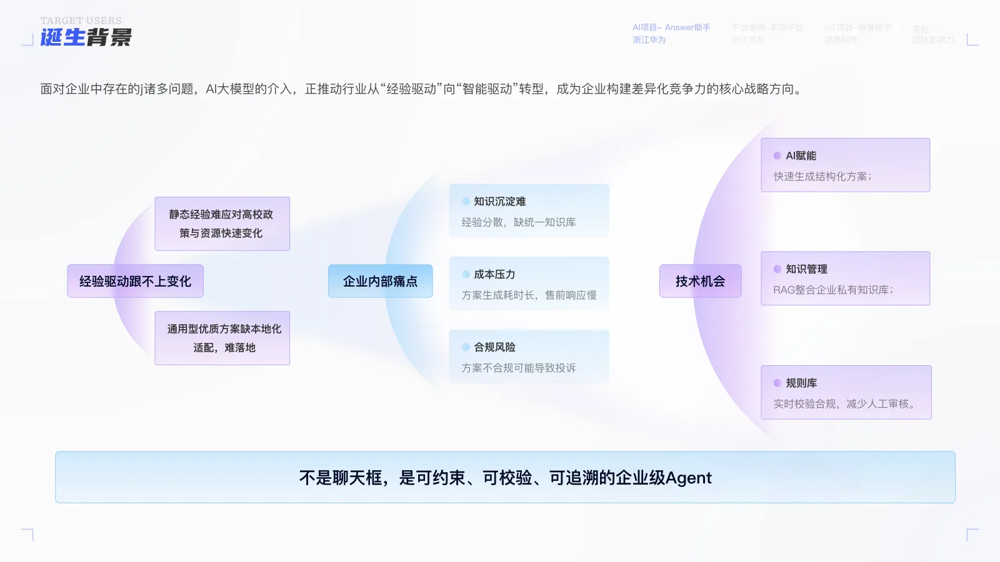
核心用户是解决方案工程师，核心诉求是「快速出高质量方案，别背合规的锅」。我们把他的任务逐条拆开，明确哪些环节 AI 可以介入提效、哪些环节必须由人把关兜底。
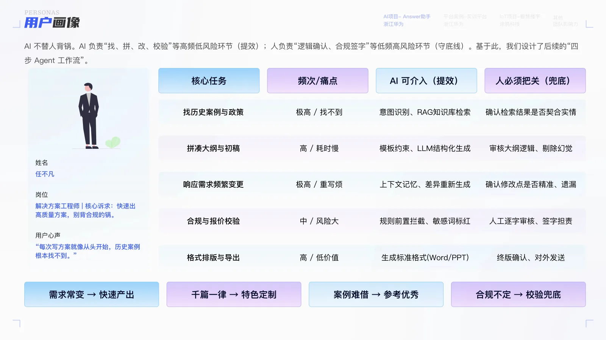
产品目标是「分钟级生成初稿」，在灵活、优质、合规可审计、高效之间取得平衡。让一线营销能快速响应客户需求，多打粮食。
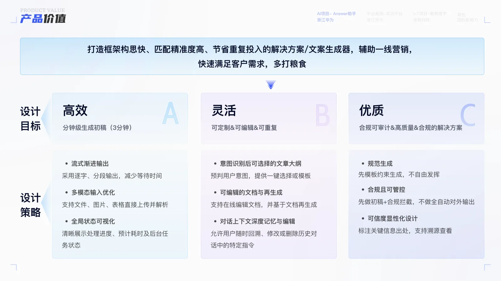
把 Agent 统一为「首席数据策略官 Answer（安Sir）」，用范围、语气、边界、格式四类约束定义它的人格与能力上限。尤其在报价、资质承诺、最终签字等高风险环节，AI 必须「主动闭嘴」并转交人工。
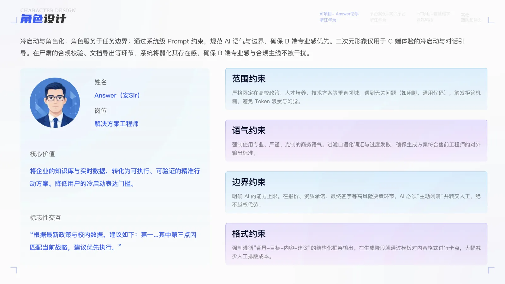
从需求解析、知识检索、结构化生成到合规校验，每一步都明确 AI 与人的分工。文档生成即留痕：版本号、Prompt 版本、生成时间戳、操作人与审核人都可追溯、可回滚。
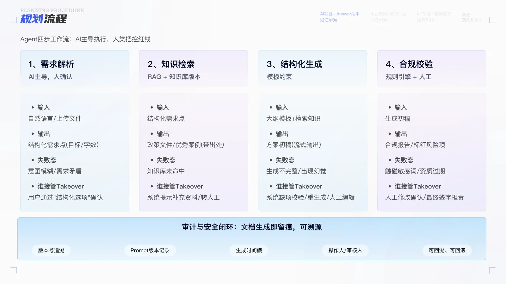
围绕确定性、可信赖、人类在环、平台化四条策略构建体验：无意图时给出行动引导，生成过程可解释、可验证、可追溯，关键节点由人先确认再生成。
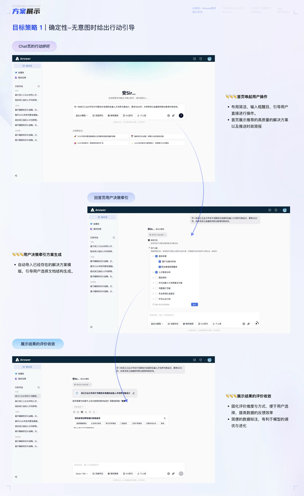
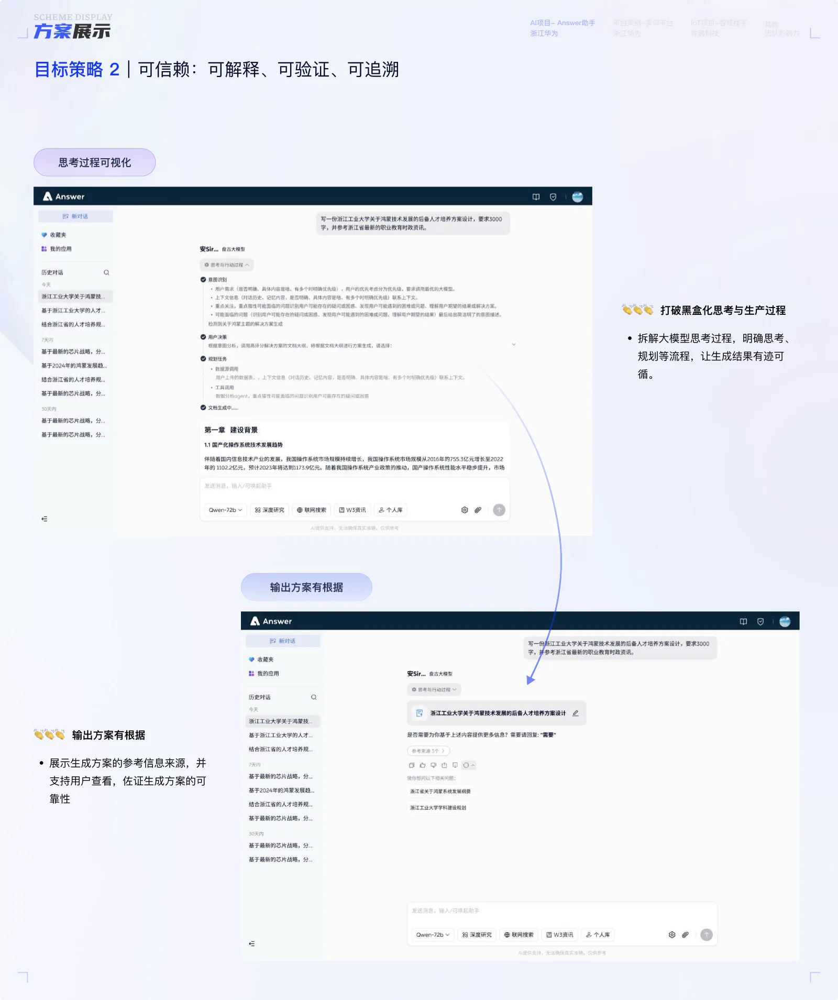
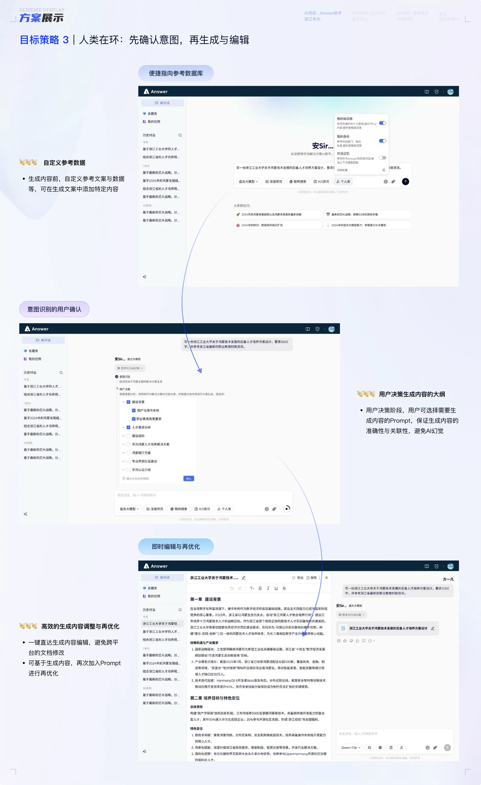
默认提供文档合规审核、时政简报、合同合规审核等多个 Agent，用户也可自建 Person Agent。底层把「生成大模型」与「规则引擎」解耦，各自独立迭代，并由企业知识库与外部合规数据源支撑。
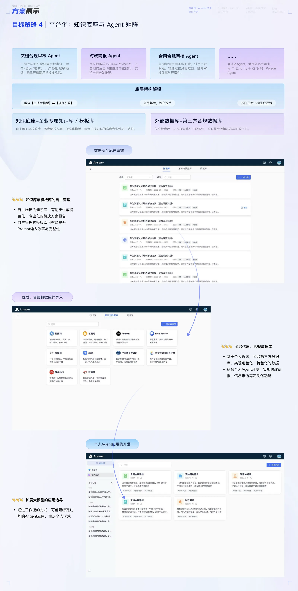
项目获公司竞赛前三优胜奖（团队现金奖励 3 万），个人获「明日之星」称号。方案产出由人工 3 天缩短到 10 分钟，提效 300%+，在多个销售区域推广，并纳入公司数字化治理重点方向。
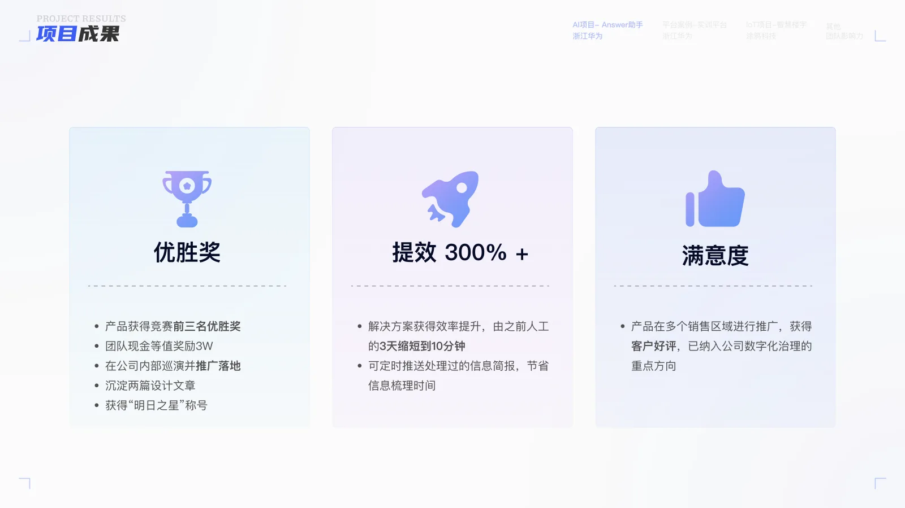
以下为产品真实界面（高分辨率），展示从意图澄清到方案生成的核心交互流程。
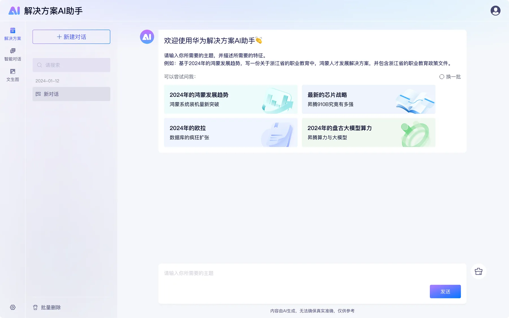
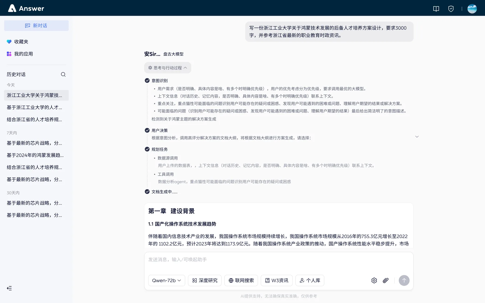
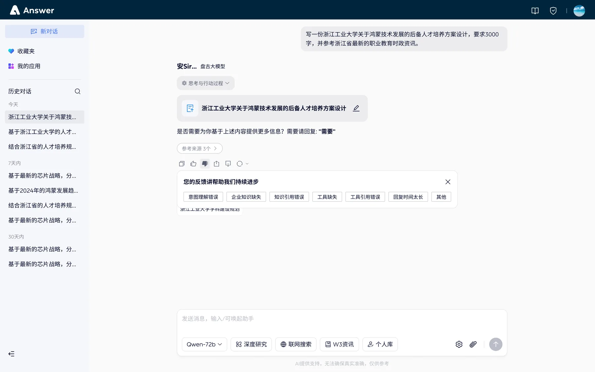
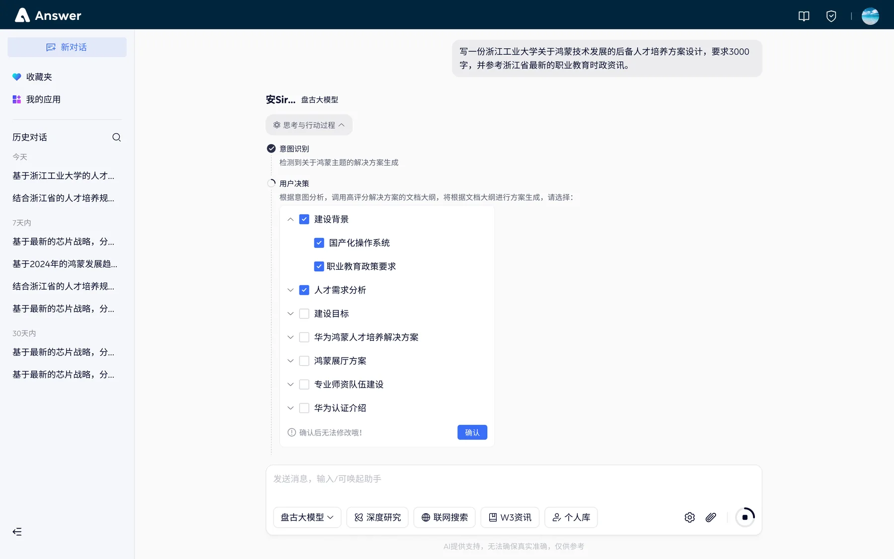
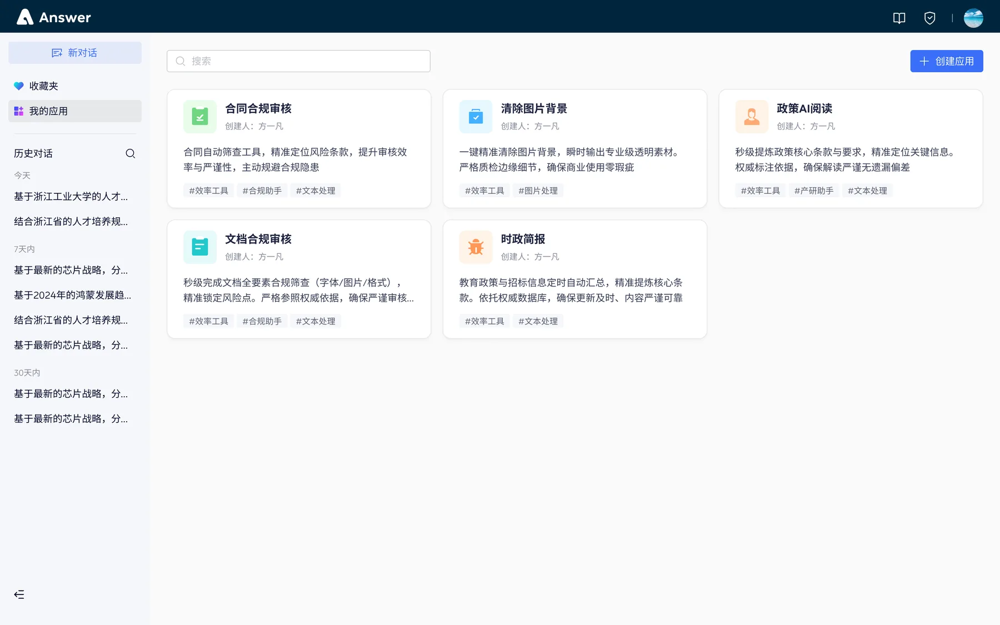
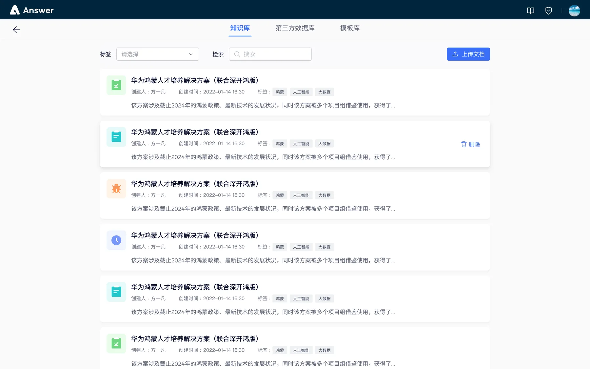